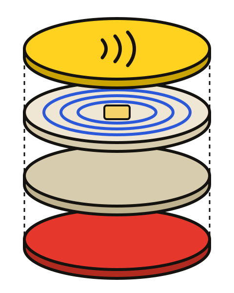

NFC
STICKER
OUR IDEA
One tiny sticker that turns everyday objects into smart ones, with a single tap.
PRESENTED BY
WHAT IS AN
NFC STICKER?
A tiny sticker with a chip and an antenna inside. Hold a phone close and it reads what is stored there.
NO BATTERY
ABOUT 4 CM RANGE
ONE TAP
WHO INVENTED IT?
NOT ONE PERSON.
NFC grew out of RFID. Philips and Sony developed it together, and Philips patents name Franz Amtmann and Philippe Maugars as inventors.
Philips + Sony, 2002
- 1945
Léon Theremin builds “the Thing”, a passive device powered by radio waves.
- 1973
Mario Cardullo patents a passive transponder with memory.
- 2002
Philips and Sony agree to create a shared NFC specification.
- 2003
NFC is approved as an ISO/IEC standard.
- 2004
Nokia, Philips and Sony found the NFC Forum.
WHERE WAS IT FIRST USED?
1997
An early form appears in Hasbro's Star Wars toys.
2005
Transit and payment trials in Hanau, Nice and Caen.
2006
The NFC Forum releases the first tag and SmartPoster specifications.
2007
First UK consumer trial of NFC tags, using the Nokia 6131.
2009
First use in transport, in Chongqing, China.
2014
iPhone 6 adds NFC, and Apple Pay launches in the US.
FORMAL AND
EXTENDED DEFINITION
FORMAL DEFINITION
An NFC sticker is a thin, adhesive tag that holds a microchip and an antenna coil. It needs no battery. It stores data that an NFC-enabled device reads at close range, about 4 cm, using radio waves at 13.56 MHz.
WHAT IT IS
A passive tag. The reader's field supplies the power, so there is no battery.
WHAT IT STORES
A small amount of data. An NTAG213 holds 144 bytes, an NTAG216 holds 888.
WHAT IT DOES
Tells a phone what to do: open a link, join Wi-Fi or save a contact.
FUNCTIONS OF EACH PART

1 2 3 4 5OUR STICKER
- 1
FACE LABEL
Shows the design and protects what is inside.
- 2
ANTENNA COIL
Turns the reader's radio field into power.
- 3
MICROCHIP
Stores the data and answers the reader.
- 4
BASE LAYER
Holds the coil and chip in place.
- 5
ADHESIVE
Sticks the tag to almost any surface.
HOW IT WORKS
- 1
TAP
The phone sends out a radio field.
- 2
POWER
The coil turns that field into electricity.
- 3
WAKE
The chip wakes up and reads its data.
- 4
REPLY
It answers, and the phone takes action.
WE NEED
A BRAVE
VOLUNTEER!
Come try an NFC sticker with us.
TAP IT!
- 1Unlock your phone.
- 2Hold it on the sticker.
- 3Wait one second.
WHY IT IS GREAT
NO BATTERY
The reader's field powers it.
LOW COST
Cheap enough to put on almost anything.
TINY & FLEXIBLE
Thin enough to stick on many surfaces.
ONE-TAP SIMPLE
No typing and no setup for the person using it.
PHONES READ IT
Phones people already carry can read it.
SHORT RANGE
It reads only within about 4 cm.
CONCLUSION
- An NFC sticker is a tiny, battery-free tag with a chip and an antenna.
- One tap on a phone can open a link, join Wi-Fi or save a contact.
- It grew out of RFID, and it is already part of everyday life.
THANK
YOU!